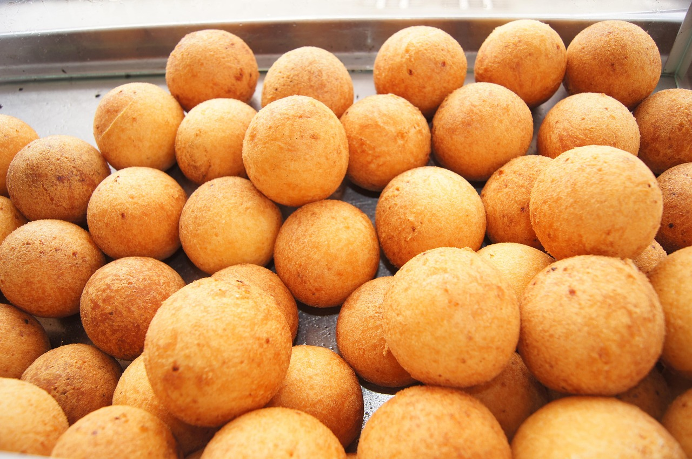
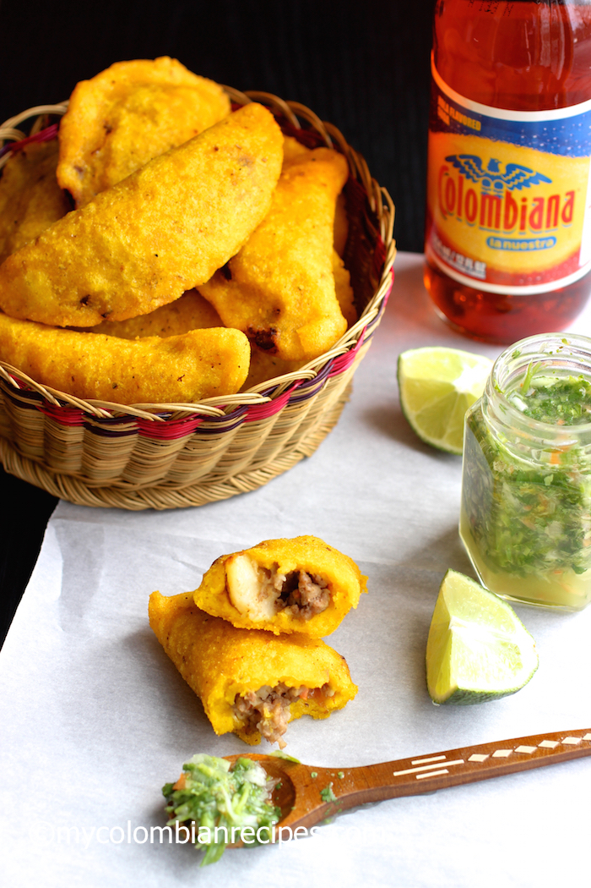
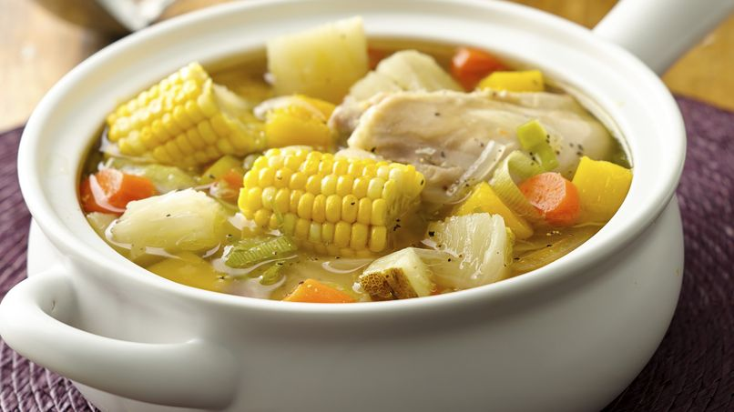

Buñuelos
Los buñuelos son esferas hechas con queso costeño y almidón de yuca. Crujientes por fuera y suaves por dentro, son tradicionales en Navidad. Son perfectos para acompañar con café. Un verdadero clásico paisa.
Precio: $2.000 COP (unidad)
Empanadas
Estas empanadas de maíz rellenas de carne, papa y condimentos, son una joya de la comida callejera. Se sirven con ají picante y limón, y son ideales para cualquier hora del día. En Manrique, cada familia tiene su propia receta.
Precio: $2.500 COP (unidad)
Sancocho
El sancocho es una sopa espesa y reconfortante, preparada con pollo, yuca, plátano, papa y mazorca. Es un plato infaltable en reuniones familiares y domingos en casa. Representa unión y tradición en cada cucharada.
Precio: $15.000 COP (porción)
Frijoles
Los frijoles son el corazón de la bandeja paisa. Cocinados lentamente con plátano maduro, zanahoria y tocino, se sirven con arroz, chicharrón, huevo frito y arepa. Un plato contundente que representa la esencia antioqueña.

Precio: $18.000 COP (bandeja completa)